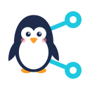
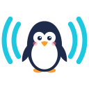

Penguintier icons
The final icon set (concept A, "Orbit", picked on 2026-10-19), drawn from the real
files in assets/: the app icon at every size, the tray states in color and as
monochrome "symbolic" icons, inside a mock GNOME top bar and desktop panels. The three
original concepts are further down.
Orbit
App icon: icons/hicolor/scalable/apps/io.github.rasikhq.Penguintier.svg (32 px and up)
and brand/app-icon-small.svg (16–24 px). Tray: tray/penguintier-{online,offline,attention}[-symbolic].svg.
Run python3 assets/render-icons.py after editing an SVG.
Concepts
The three concepts first shown. A was picked.


Orbit
The penguin stands inside a tilted orbit, with one peer riding the ring: a node in a network, or a tiny planet. The ring passes behind its head and in front of its belly. The strongest silhouette of the three.
Peers
The penguin links out to two peers, like the familiar network/share glyph. The most literal "network" reading; calm and technical.
Beacon
The penguin between two signal arcs: "I'm online and reachable". Symmetric, and the easiest to read at 16 px.